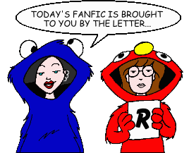
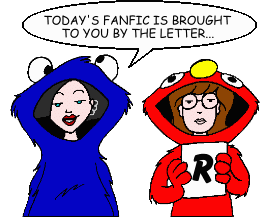

Fan Fiction
"R" by Title

Fan Fiction
"R" by Title

|
Authors: If you no longer wish for any of your stories to be posted, please send e-mail to fanfic@lawndale.net and I will remove them at once. |
| Race to the Finish By Mike Quinn Category: Miscellaneous Fed up with the current administration, Helen decides to run for mayor, but finds herself unprepared -- at first -- for the battle she's about to face against the long-time incumbent. |
| Raechael 101 [Artwork] By Saffron Category: Miscellaneous Daria feels threatened when a skater-punk songstress arrives at Lawndale and appears to take an interest in Trent. |
| Raven vs. Ms. Barch By Alexander Lamar Eldritch Category: School Situations Ms. Barch says the wrong thing to Raven, leading to a showdown. |
| A Raven, Nothing More [Artwork] By Lew Richardson Category: Miscellaneous A "tribute poem" to the "Daria" fanfic community, based on (you guessed it) Edgar Allen Poe's poem "The Raven." |
| The Real Story (*) By Queen Jossie Category: Miscellaneous A look into the mysterious life of Jane's boyfriend, Tom. |
| Realization By Maeve Johnston Category: Crossovers & Parodies Trent falls asleep while watching the movie "The Crow" and dreams that he's living the events of the film. |
| REALLY Guilty Pleasures (*) By Nick Gaston Category: Miscellaneous A familiar figure indulges in a favorite pastime, much to the dismay of State and Federal law enforcement officials. An "Iron Chef" entry. Note: This story includes content (language, violence, or sexual situations) that may not be appropriate for some readers. |
| Reaper in the Wind By Richard Lobinske Category: Crossovers & Parodies CIA agents Daria Morgendorffer and Tom Sloane must collaborate with the Naval Criminal Investigative Service when a Reaper, a magical creature from the past, kills a Marine in the middle of a secure base. A sequel to "Eternity," and a crossover with the television series "NCIS." |
| Rebel Without a Clue By Brian Taylor Category: Past & Future In a not-so-great future, Jane makes a rather... unusual decision after meeting up with a college friend. |
| Rebooting By Wyvern337 Category: Miscellaneous Over the summer after senior year, Daria finds herself having to bid farewell to two dear old friends, and wondering how she's going to do without them. |
| Reconstructing Sandi By Corvus Marinus Category: Series & Multi-Part Stories (Miscellaneous) What happens when you suddenly realize that you are achieving nothing in life and have no real friends? You might do what Sandi Griffin has decided to do: rebuild your life from the ground up, with help from a certain artistically-inclined social outsider. |
| The Red Maid By Austin Covello Category: Miscellaneous What happens when you discover that your bitter enemy isn't really so bad after all? Find out in this strange tale of Daria and Monique, who over the years go from bitter enemies to the best of friends... until there occurs an act of ultimate betrayal. |
| Reflections in the Hood of a Car By Angelinhel Category: Miscellaneous Tom reflects on his role in "the triangle" after all is said and done. |
| Relativity (*) By Nicole Young Category: Miscellaneous When Jane can't produce a required parental signature, she has to find her mother before Ms. Li turns the Lanes in for child neglect. Meanwhile, Quinn is forced to admit she has a sister, and Daria uncovers some surprises about her family tree. |
| The Reluctant Ring-Bearer By Morfiwien Greenleaf Category: Crossovers & Parodies During a Bad Movie Night featuring "The Lord of the Rings: The Fellowship of the Ring," Daria falls asleep and is magically transported to Bag End and ordered to complete Frodo's famous quest. With Jane, Trent, Upchuck, and the Fashion club by her side, she endeavors--with some pushing and shoving from the narrator--to destroy the One Ring. |
| Remember Me By Angelinhel Category: Miscellaneous An Iron Chef ficlet. Quinn's worst nightmare. |
| Remembering a Girl (*) By Love Gordon Category: Miscellaneous A sequel to "A Dirge for Daria," as Daria's friends recall her life years after her death. |
| Renewal By RangerLou Category: Miscellaneous Daria re-evaluates her life. |
| Repairs By Bacner Category: School Situations Ms. Li gets the LHS staff to fix up her newest acquisition. |
| Repeiceing Down the Girl By Morden Gans Category: Sci-Fi, Fantasy & Horror Follow along and re-experience the most important events in Daria's life as the writer adds himself into this story of love, adventure and the many possibilities tomorrow brings. See many familiar faces, including some freinds from Holiday Island, and some new faces that bring Lawndale that much closer to home. |
| Requiem for a Lightweight By Um Category: Miscellaneous Daria just isn't her old self, at a loss upon finding the world suddenly less sick and sad. |
| Requiem for an Amiga By Wordbearer2 Category: Miscellaneous Jane is dead. How will Daria react in a post-Jane Lane universe? |
| The Rest of My Damn Life [Artwork] By The Ranting Klown Category: Series & Multi-Part Stories (Past & Future) Daria dives into the college life at Raft, meets new people, and has interesting new experiences in this series. |
| Restrain Jane Lane! [Artwork] By Nemo Blank Category: Romance A cosmic comedy of errors conspires to put Cupid's love tazer in Jane's hands. When she figures out what the heck it is, Jane can't resist trying out the device on people she knows, but what will be the consequences of her meddling in things best left alone? |
| Retrograde Girl By Nemo Blank Category: Miscellaneous An automobile accident gives Daria retrograde amnesia, completely erasing the Daria we all know. Without knowing if or when her memory will ever return, Daria is forced to literally rebuild her life from square one. |
| Return to Grassburg By Atomius Category: Sci-Fi, Fantasy & Horror Daria goes back to Grassburg to see the effects of her previous visit. A sequel to "Lawndale 2500." |
| Reunion By Smileyfax Category: Miscellaneous Helen meets up with an old friend from her past, and feelings once dormant are rekindled. |
| Revelations and Confrontations By Bacner Category: Miscellaneous The Fashion Club meets Fear. Daria meets Quinn's room. Jane meets her (concerned) muse. |
| The Revised Daria Fanfic Cliche Drinking Game By Dave Hines Category: Miscellaneous A revised (with permission) version of the original by Aaron Solomon "Hierargo/Nails" (ben Saul Joseph) Adelman, now sorted by topic and with updated entries. How many drinks can come out of your favorite fanfic? |
| Revision By Kara Wild Category: Sci-Fi, Fantasy & Horror A horror-comedy tale of what happens when Helen tries a little too hard to be young, and the consequences it has for a fledgling Daria/Trent relationship. Set between "Dye! Dye! My Darling" and "Is It Fall Yet?". Part of Thomas Mikkelsen's "Tales From the 'Burbs" collection. |
| Rime of the Auntcent Mariner By Shane Greentree Category: Crossovers & Parodies "I hear thee, auntcent mariner!" Stuck at a wedding and facing boredom, Amy Barksdale tells Daria a story. It just happens to be in the form of an elaborate piece of verse. |
| Ring Toss By Nemo Blank Category: Miscellaneous In Nemo Blank's final story, things are moving fast in the lives of our favorite Lawndale denizens, especially for Daria and Tom, whose relationship shifts into high gear after coming perilously close to ending for good. Little do they know that their road to happiness is about to develop some major curves... |
| The Rival [Artwork] By EmpressEKV Category: Miscellaneous The new girl in town gives Daria a run for her money... in more ways than one. |
| The Road Home By CAP Category: Past & Future A response to a PPMB Iron Chef challenge. A story about Helen and Jake, two wandering hippies, meeting on a California beach in 1969. |
| The Road Not Taken (*) By Guy Payne Category: Past & Future A visit with Daria in the year 2012. |
| The Road Worrier, Part 2 [Artwork] (*) By Milo Minderbinder Category: Crossovers & Parodies No, it's not what you're thinking. Yes, it's a short parody of the second "Mad Max" movie, "The Road Warrior" (aka "Mad Max 2"). |
| Roamin' Holiday (*) By The Angst Guy Category: Past & Future A familiar face turns out to be Daria Morgendorffer's college roommate--but it wasn't a face she had ever expected. |
| Rockaby Sweet Baby Jane By Ranger Thorne Category: Miscellaneous Daria leans her best friend once had a baby, just in time for the father to return and try to claim it... but is it the baby he really wants? |
| A Romantic Conversation By Deref Category: Romance Two lovers have a little romantic chat. An entry in one of the PPMB's "Iron Chef" contests. |
| Run, Jane, Run By Angelinhel Category: Past & Future Why Jane likes to run. A ficlet. |